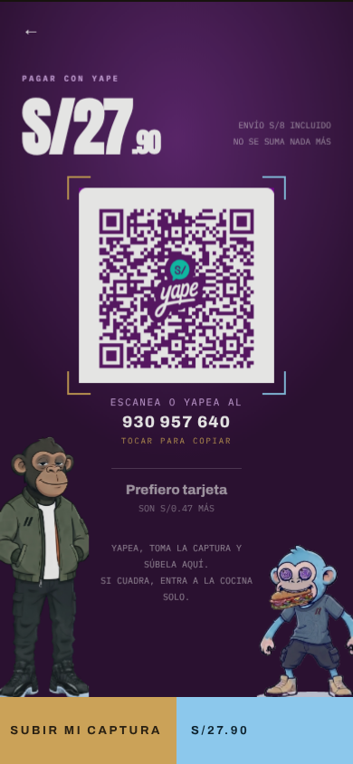
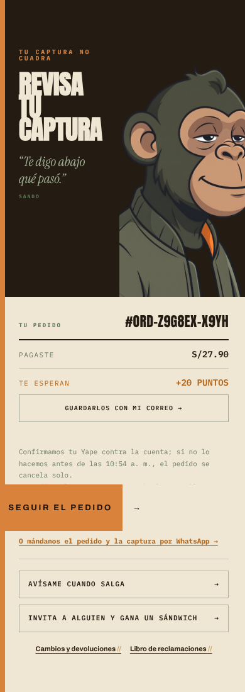
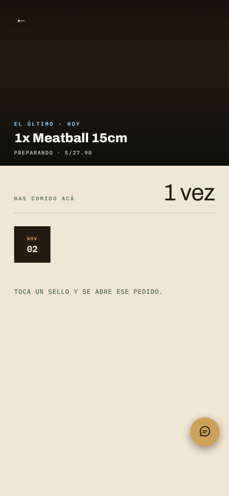
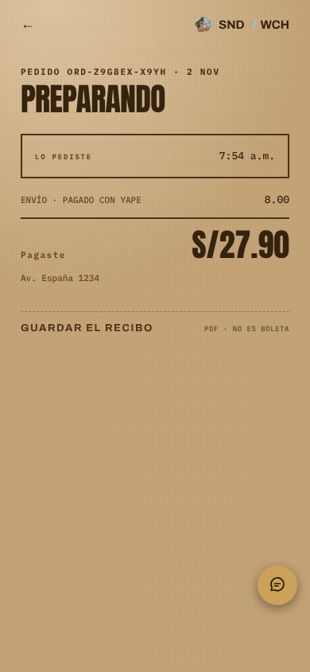

Tu pedido, en vivo · 1 de 2 · lo que pasa hoy
Después de pagar, la app cambia de mundo tres veces
Pagas en morado, el pedido se confirma en crema, «Seguir el pedido» te lleva a tu historial («Has comido acá 1 vez») y el detalle es un recibo kraft. Ninguna de las tres pantallas se actualiza sola: si apruebas el pago o el pedido sale, el cliente no se entera hasta que recarga.
Pagar

Bien: un solo paso, Yape o tarjeta.
Pedido enviado

Dice «Te digo abajo qué pasó», pero abajo primero vienen «Pagaste S/27.90» (aún no está confirmado) y los puntos. El motivo y los botones quedan bajo el pliegue.
«Seguir el pedido»

Lleva al historial, no al pedido. El estado es una línea gris de 9 px: «Preparando · S/27.90». Sin pasos ni hora.
Detalle

Un recibo bonito para después, no para el momento en que esperas tu sándwich.
Tu pedido, en vivo · 2 de 2 · la propuesta
Una sola pantalla que avanza sola
La pantalla de «pedido enviado» pasa a ser el seguimiento. Arriba, en grande, qué está pasando y a qué hora llega; debajo, cuatro pasos; y si hay algo que el cliente tiene que hacer, va primero. Se actualiza sola cada pocos segundos. El historial y el recibo se quedan como están, en Mi cuenta.
Si la captura no cuadra
Pedido #ORD-Z9G8EX
Falta tu pago
Al confirmar, llega12:40 – 12:55
No pudimos leer tu captura.Sube la pantalla completa de «¡Yapeaste!», sin recortar.
Subir otra captura →O mándanos el pedido y la captura por WhatsApp →
TotalS/27.90
Llega aAv. España 1234
Si no lo confirmamos antes de las 10:54, se cancela solo.
→
Pago aprobado: se mueve sola
✓ Pago confirmado
En la cocina
Llega12:40 – 12:55
Pago ✓
Cocina
En camino
Llegó
“Ya prendí la plancha.” — Sando
1× Meatball 15 cmS/19.90
EnvíoS/8.00
PagasteS/27.90
Al confirmar+20 puntos
Guárdalos con tu correo · Avísame cuando salga
→
Va en camino
Salió a las 12:38
Va en camino
Llega12:40 – 12:55
Pago ✓
Cocina ✓
En camino
Llegó
Ya salió de la cocina y va hacia ti.
Llega aAv. España 1234
RecibeEzra · 9•• ••• 640
Cuando lo tengas en la mano, toca «Ya me llegó».
- Lo que hay que hacer, primero. Hoy el motivo de la captura está debajo de «Pagaste» y de los puntos. Va arriba, y «Pagaste» no aparece hasta que el pago esté confirmado.
- Los cuatro pasos y la hora, siempre a la vista. Es lo que el cliente viene a mirar mientras espera.
- Se mueve sola. Cuando apruebas desde el panel o desde WhatsApp, o marcas «Salió», su pantalla cambia sin recargar.
- «Seguir el pedido» desaparece: ya estás en el seguimiento. El historial con los sellos se queda en Mi cuenta.
- Un mismo mundo: la parte de arriba oscura con SANDO y la losa crema de hoy, sin saltar al kraft ni al historial.
Por qué funciona: el seguimiento por pasos de Domino's (2008) nació porque los clientes llamaban ansiosos a la tienda; hoy lo copian Uber Eats, Rappi y PedidosYa, que después de pagar te dejan directo en el seguimiento. Un estudio de Harvard y UCL (Buell, Kim y Tsay, Management Science) midió que cuando el cliente ve el trabajo que se hace por él, la calidad que percibe sube 22 %. Y Baymard, con más de 90 sesiones en apps de comida, encontró que la gente duda de terminar cuando no sabe cómo seguir su pedido ni cómo contactar. No hay un dato peruano de este punto en particular.